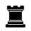
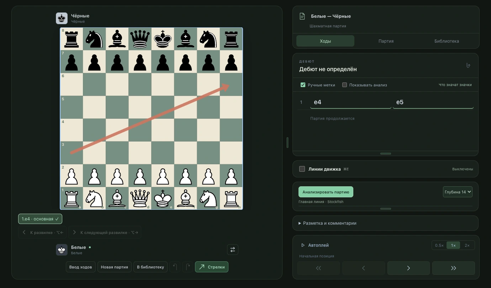
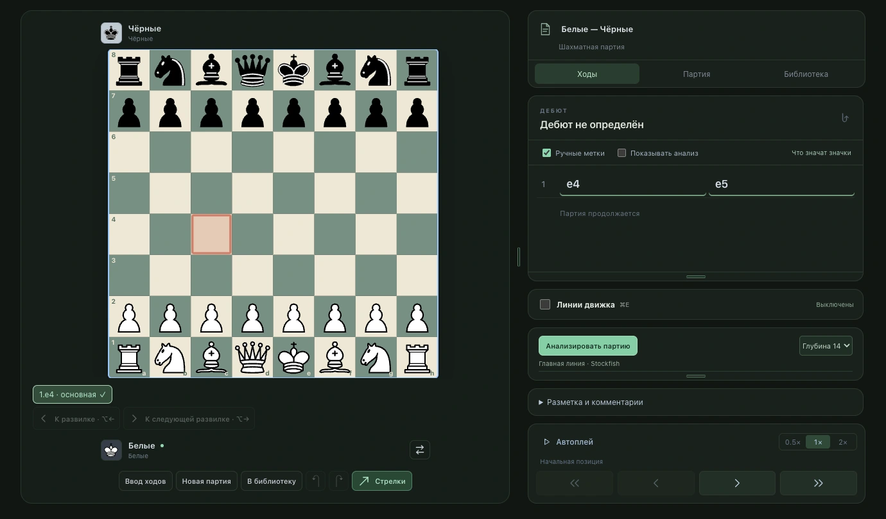
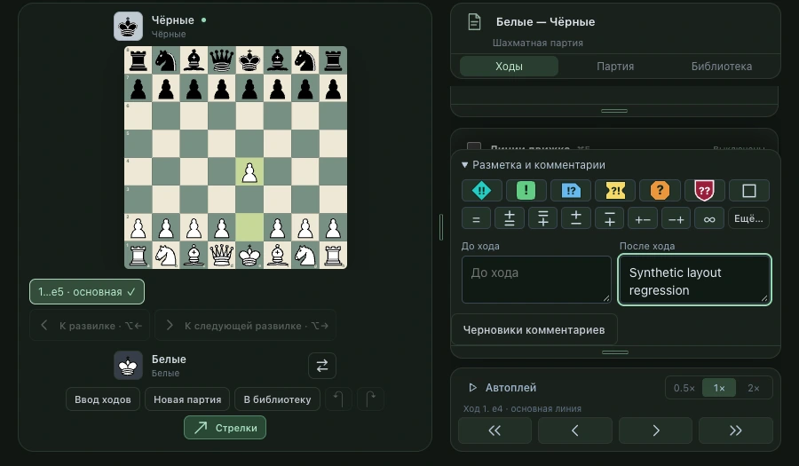

Откройте. И играйте дальше.
PGN-файлы, комментарии и вложенные варианты. Перемещайтесь по ходам клавишами, мышью или автоплеем — и выбирайте своё продолжение.
ДЛЯ ТЕХ, КТО ЛЮБИТ ШАХМАТЫ
Хорошая идея заслуживает внимания.
Открывайте партии, исследуйте варианты
и находите свои — в PGN Reader для Mac.

8


 7
7

 2
2 1abc
1abc eh
ehСлон смотрит на f7. Нажмите на ход, чтобы вернуться назад.
МЕНЬШЕ ЛИШНЕГО. БОЛЬШЕ ШАХМАТ.
Одна партия может рассказать много.
Дайте себе время её прочитать.
PGN-файлы, комментарии и вложенные варианты. Перемещайтесь по ходам клавишами, мышью или автоплеем — и выбирайте своё продолжение.
Нарисуйте стрелку, выделите поле, добавьте комментарий или оценку хода. Стройте свои варианты и смело отменяйте правки.
Stockfish разбирает позицию прямо на вашем Mac. Сравнивайте линии и исследуйте найденные идеи, даже когда интернета нет.
ЗНАКОМЬТЕСЬ, ВАШ НОВЫЙ РИДЕР
Доска слева. Ходы и мысли справа.
Пространство, в котором легко сосредоточиться.



Доска, ходы и линии анализа — всё перед глазами.
Место для своей коллекции.
Собирайте партии в библиотеку, раскладывайте по папкам и возвращайтесь к важным позициям.
Ваши партии остаются вашими.
Экспортируйте результат в привычный PGN: ходы, варианты и комментарии сохраняются вместе.
МАЛЕНЬКИЕ ДЕТАЛИ. БОЛЬШАЯ РАЗНИЦА.
Коралловая стрелка показывает идею. Комментарий объясняет её. А история правок оставляет место для эксперимента.
Удержать. Протянуть. Готово.
Полсекунды на поле — и можно рисовать стрелку. Обычный клик выделяет поле и очищает временные стрелки.
ЕЩЁ ПАРА ХОДОВ
Нужна macOS 12 Monterey или новее. Один установщик содержит версии для Intel и Apple Silicon. Это тестовый выпуск: если заметите проблему, сохраните партию в PGN перед обновлением.
Аккаунт для приложения не нужен. Просмотр партий, редактирование и встроенный Stockfish работают локально. Интернет нужен, чтобы скачать установщик или новую версию.
Нажмите «Открыть PGN», перетащите файл в окно или загрузите встроенный пример. Кнопка «В библиотеку» сохраняет партию внутри программы. «Экспорт → Сохранить .pgn» создаёт отдельный файл. Исходный PGN сам по себе не перезаписывается.
Выпуск пока без нотарификации Apple. Для доверенной копии с этой страницы разрешите запуск именно PGN Reader в настройках безопасности macOS. Отключать защиту целиком не нужно.
Пока доступна только версия для macOS. Возможность переноса на Windows рассматривается; готовой сборки и даты выпуска ещё нет.
Нарисованные коралловые стрелки и выделение полей — временная разметка для текущей позиции. Комментарии и варианты сохраняются в партии. Стрелки из самого PGN отображаются отдельно.
СЛЕДУЮЩИЙ ХОД — ВАШ
PGN Reader для Mac. Спокойно. Локально. По делу.
Скачать для Mac .dmgПока без нотарификации Apple. Что это значит?